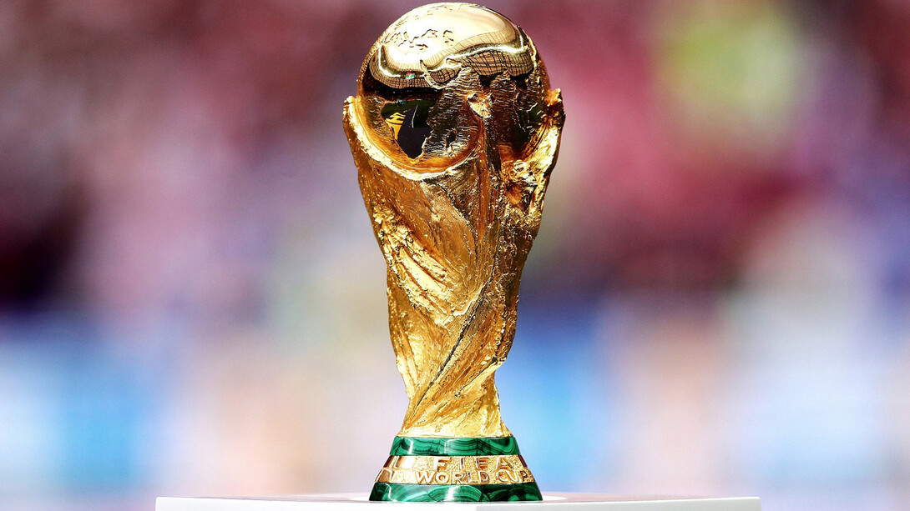

La Copa Mundial de Fútbol de Selecciones Internacionales, organizada por la FIFA, es el torneo de fútbol más prestigioso y esperado a nivel global. Celebrado cada cuatro años, reúne a las mejores selecciones nacionales de todo el mundo, quienes compiten por el codiciado trofeo. Desde su primera edición en 1930, el torneo ha evolucionado, convirtiéndose en un evento que no solo celebra el talento y la pasión por el fútbol, sino que también une a millones de aficionados de diversos países. Los partidos de la Copa Mundial son escenarios de drama, emoción y destreza, donde se forjan leyendas y se viven momentos históricos que quedan grabados en la memoria colectiva de los amantes del deporte rey.
La Copa Mundial de Fútbol no solo es un espectáculo deportivo, sino también un fenómeno cultural y social que trasciende fronteras y generaciones. Durante el torneo, el mundo entero se detiene para ver a sus equipos favoritos en acción, con naciones enteras unidas por la esperanza y el orgullo. Las historias de superación y las sorpresas inesperadas, como las victorias de equipos considerados "cenicientas", añaden un encanto especial al evento. Además, la Copa Mundial promueve la convivencia y el intercambio cultural, al reunir a aficionados de todos los rincones del planeta en un mismo escenario. Este torneo no solo celebra el fútbol, sino también los valores de respeto, amistad y fair play, destacando el poder del deporte para unir a la humanidad en torno a un objetivo común.
